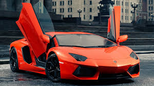
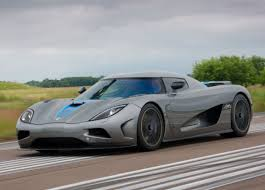

Спортивний автомобіль або спорткар (англ.sports car) — це автомобіль, що сконструйований задля ефективної їзди. Більшість спорткарів задньопривідні, мають два сидіння, двоє дверей та розроблені для чіткішого керування, прискорення та естетики. Зазвичай від спортивного автомобіля очікують пречудової здатності триматись дороги, гальмувати, маневрувати, а також низької ваги та великої потужності, аніж місця для пасажирів, комфорту та економії палива. Водії беруть до уваги марку автомобіля та гоночну історію (наприклад, Ferrari, Porsche, Lotus), як важливий показник спортивних можливостей, але деякі марки, такі як Lamborghini, що не беруть участі у перегонах та не будують гоночних автомобілів, також добре продаються. Спортивний автомобіль не потребує великого потужного двигуна, але у багатьох спорткарів він є. Деякі класичні британські спорткари не мають потужного двигуна, але вони відомі завдяки їх виключеній керованості через малу вагу, добре спроектованому відбалансованому шасі та сучасній підвісці. На вузеньких закручених дорогах, такі автомобілі виступають набагато краще за важчі, потужніші розкішні автомобілі з меншою маневреністю.
 Automobili Lamborghini S.p.A. (скорочено: Lamborghini; укр. Ламборґіні) — італійська компанія, виробник спортивних авто, а також тракторів Lamborghini Trattori. Знаходиться у комуні Сант'Агата-Болоньєзе, біля Болоньї. Компанія заснована у 1963 році Ферруччо Ламборгіні, на той час, він вже був засновником та власником кількох компаній.На початку 1960-х років виробник тракторів Ферруччо Ламборґіні (1916—1993) почав виявляти інтерес до розробки швидкісних автомобілів. Він мав автомобілі виробництва Osca, Maserati і Ferrari, але жодне авто його не влаштовувало за всіма показниками. Є кілька версій щодо причин, з яких Ламборґіні 1962 року заснував власну фірму. Всі вони зводяться до конфлікту між Енцо Феррарі (власником компанії Ferrari) і Ламборґіні. Найпопулярнішою є версія сина Ферруччо Ламборґіні, за якою його батько прибув на фабрику до Енцо Феррарі поскаржитися на якість зчеплення у своєму автомобілі Ferrari 250 GT. Енцо відправив Ламборґіні назад з побажанням і далі займатися тракторами, бо, мовляв, на автомобілях (тим більше спортивних) Ламборґіні не розуміється. Ламборґіні повернувся на свою фабрику, розібрав трансмісію у власному Ferrari 250 GT і виявив, що виробник багатьох деталей той самий, що й у тракторах "Ламборґіні". На своїх складах він знайшов відповідну заміну, і проблему було вирішено. Автомобільна фірма "Ламборґіні" була створена як дочірня фірма компанії Lamborghini Trattori S.p.A. Вона працює в селищі Сант-Аґата Болоньєзе (Sant’Agata Bolognese) біля Болоньї. Ферруччо вирішив, що його автомобіль буде мати двигун V12, і залучив до свого проекту талановитого інженера Джотто Бідзаріні (Giotto Bizzarrini), який до того розробляв Ferrari V12.
 Koenigsegg — шведський виробник автомобілів. Компанія була заснована у 1994 році Крістіаном фон Кьонігсеггом, якому на той час виповнилося лише 22 роки. Молодий швед ставив собі за мету створити ідеальний суперкар. Першим автомобілем спроектованим Крістіаном став прототип Koenigsegg СС, який мав карбоновий дах. Протягом 1996 року його тестують на гоночних трасах та в аеродинамічній трубі компанії Volvo. Вперше для широкого загалу прототип Koenigsegg СС був представлений на Канському кінофестивалі у 1997 році. Завдяки цьому були підписані перші міжнародні контракти. Вже у 2000 році на Паризькому автосалоні представлена модель, яка готова до серійного виробництва, а вже у 2002 році воно було налагоджене. Модель, що першою пішла у серіне виробництво мала назву CC8S. Після пожежі в первісному цеху в 2003 році Koenigsegg переїхали на нинішнє місце штаб-квартири — колишню базу винищувачів площею 4000 м² , яка раніше була домом для BBC Швеції. Поряд з будівлями є 1,7 км злітно-посадкової смуги, яка ідеально підходить для високошвидкісних випробувань автомобілів. Так як злітно-посадкова смуга завширшки 50 метрів, вона також легко може бути перетворена в «гоночну трасу». Багато клієнтів Koenigsegg користуються можливістю посадки своїх приватних літаків на злітно-посадочній смузі недалеко від дверей заводу. Існує також вертолітний майданчик перед головним входом для тих, хто подорожує на вертольоті[1]. У 2007 році компанія представила перший у світі «зелений» суперкар, що міг працювати на біопаливі Е85 та видавав 1018 к.с. У 2011 році на Женевському автосалоні представлено новинку Agera R.